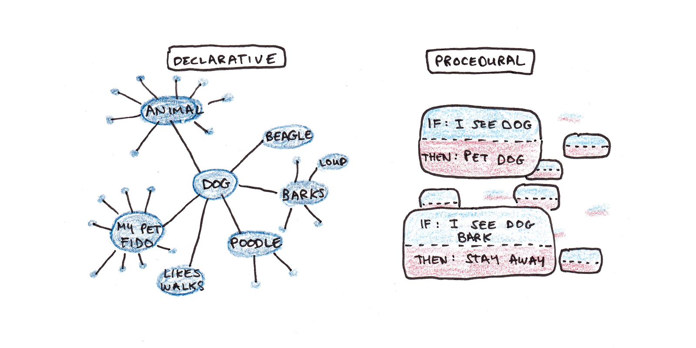

Wie Menschen lernen
Cognitive effort isn’t a bug—it’s the feature
19 September, 2025
KI kann uns produktiver machen
- Wichtige Erkenntnisse aus der Forschung:
- Dell’Acqua et al. (2023) erforschen die Möglichkeiten, mit KI-Unterstützung kognitive Aufgaben zu verbessern. Fazit: KI kann Produktivität und Qualität steigern, aber auch neue Herausforderungen ergeben.
- Toner-Rodgers (2025) diskutiert die Implikationen von KI für die Forschung und betont die Balance zwischen menschlicher und maschineller Intelligenz.
- Cui et al. (2024) analysieren die Auswirkungen von generativer KI auf Software Engineering und hebt sowohl Chancen als auch Herausforderungen hervor.
- Erkenntnisse:
- Automatisierung von routinemässigen kognitiven Aufgaben ist möglich
- Unterstützung kreativer Arbeit ist möglich
- Deskilling: Gefahr, bei ständiger KI-Unterstützung eigene Fähigkeiten zu verlieren
- Ohne Training: KI-Tools werden oft für ungeeignete Aufgaben eingesetzt
Aber halt…
🤔
Sollten Lernende überhaupt produktiver sein?
Was ist, wenn Anstrengung beim Lernen wichtig ist als das Ergebnis?
Warum existieren Schulen?
Wir unterscheiden zwischen:
Biologisch primärem Wissen:
- Wofür wir evolutionär angepasst sind
- Lernen geschieht mühelos und automatisch
- Beispiele: Sprechen lernen, Gesichter erkennen, soziale Interaktion
Biologisch sekundärem Wissen:
- Kulturelle Errungenschaften ohne evolutionäre Anpassung
- Erfordert bewusste Anstrengung und Instruktion
- Beispiele: Lesen, Schreiben, Mathematik, Programmieren
Primäres Wissen kann durch natürliche Entdeckung (discovery) erlernt werden, während akademische Fähigkeiten explizite Anleitung und strukturiertes Üben erfordern.
Experten vs. Anfänger
Experten haben eine neuronale Architektur, die Anfänger erst entwickeln müssen.

Zwei verschiedene Betriebssysteme
| Dimension | Anfänger | Experten |
|---|---|---|
| Sehen | • Einzelne Teile | • Bedeutungsvolle Muster |
| Verarbeiten | • Schritt-für-Schritt-Denken • Deliberativ • Bewusste Anstrengung |
• Automatische Prozeduren • Intuitiv • Unbewusst |
| Neural | • Schwache Verbindungen • Bahnen noch im Aufbau |
• Myelinisierte neuronale Bahnen • Tausende Stunden geübt |
Cognitive Load Theory
Warum Anfänger anders lernen müssen als Experten
Arbeitsgedächtnis
- Begrenzt: Wenige Elemente gleichzeitig
- Flüchtig: Sekunden bis Minuten
- Bottleneck: Hier findet aktives Lernen statt
- Problem: Schnell überlastet bei komplexen Aufgaben
Langzeitgedächtnis
- Unbegrenzt: Keine bekannte Obergrenze
- Dauerhaft: Jahre bis lebenslang
- Organisiert: Schemata und Chunks
- Lösung: Automatisierte Prozesse belasten Arbeitsgedächtnis nicht
Kernprinzip: Lernen = Transfer vom Arbeits- ins Langzeitgedächtnis durch Schemabildung (Wissensstrukturen)
Die drei Arten kognitiver Belastung
| Art | Definition | Beispiel | Gestaltbar? |
|---|---|---|---|
| Intrinsisch | Komplexität des Lernstoffs selbst | Quantenphysik hat höhere intrinsische Last als Addition | ❌ Nur durch Sequenzierung |
| Extrinsisch | Wie Material präsentiert wird | Text und Grafik getrennt vs. integriert | ✅ Durch gutes Design minimierbar |
| Lernrelevant | Mentaler Aufwand für Schemabildung | Verbindungen herstellen, Muster erkennen | ✅ Sollte maximiert werden |
Das Lerndilemma:
- Gesamtlast darf Arbeitsgedächtnis nicht überfordern
- Aber: Lernrelevanter cognitive load ist essentiell für Expertise-Entwicklung
- Lösung: Extrinsische Last minimieren, um Raum für lernrelevante Last zu schaffen
CLT-Prinzipien für effektives Lernen
| Prinzip | Für Anfänger | Für Fortgeschrittene | Implikation |
|---|---|---|---|
| Worked Examples | ✅ Reduziert kognitive Last durch Beispiele | ❌ Langweilt und hemmt | Scaffolding anpassen |
| Problem Solving | ❌ Überfordert das Arbeitsgedächtnis | ✅ Fördert Schemabildung | Timing ist kritisch |
| Split-Attention | Text + Bild integriert präsentieren | Weniger relevant | Klare Darstellung wählen |
Der Expertise Reversal Effect
Was Experten hilft, kann Anfängern schaden – und umgekehrt. Lernumgebungen müssen sich an das Niveau anpassen.
Praktische Regel: Beginne mit hoher Unterstützung (Scaffolding) und reduziere sie graduell mit wachsender Expertise.
CLT und KI: Cognitive Offloading
Das Lernparadox: KI optimiert für Produktion statt Lernen
| Kognitive Last | Ohne KI | Mit KI | Konsequenz |
|---|---|---|---|
| Intrinsisch | Bleibt konstant | Scheint reduziert | Komplexität wird versteckt, nicht bewältigt |
| Extrinsisch | Variabel | ✅ Minimiert | Gut für Effizienz |
| Lernrelevant | Wird aufgebracht | ❌ Eliminiert | Keine Schemabildung |
CLT und KI: Cognitive Offloading
Drei kritische Lernmechanismen werden ausgeschaltet:
| Mechanismus | Normal | Mit KI-Offloading |
|---|---|---|
| Vorhersagefehler | Lücke zwischen Erwartung & Realität = Lernsignal | Keine Erwartungen → kein Lernen |
| Gedächtniskonsolidierung | Aktive Verarbeitung → Speicherung | Passive Konsumption → Vergessen |
| Prozedurale Entwicklung | Tausende Wiederholungen → Automatismen | Überspringen → keine Expertise |
Die CLT-Perspektive: Schwierigkeit ist kein Bug – sie ist das zentrale Feature für Expertise-Entwicklung
Wie Expertise entwickelt wird
Von Fakten zu automatisierten Prozeduren
| Gedächtnissystem | Beschreibung | Eigenschaften | Beispiel |
|---|---|---|---|
| Deklaratives Gedächtnis | “Wissen dass” | • Fakten, Regeln • Bewusst, langsamer Abruf |
“Um \(3x + 5 = 20\) zu lösen, \(5\) von beiden Seiten subtrahieren.” |
| Prozedurales Gedächtnis | “Wissen wie” | • Automatisierte Prozesse • Schnelle, mühelose Ausführung |
\(3x + 5 = 20\) sehen → direkt wissen: \(x = 5\) |
Der Weg zur Expertise
Deklarative Fakten → Tausende Übungszyklen → Prozedurale Automatismen

Abbildung von Scott H Young
Das Lernparadox: Gefühl ≠ Realität
| Situation | Wie es sich anfühlt | Was tatsächlich passiert | Der Trugschluss |
|---|---|---|---|
| Beim Kämpfen mit einem Problem | • Frustration 😣 • “Ich kann das nicht” • Langsamer Fortschritt • Unsicherheit |
• Neue neuronale Verbindungen entstehen • Tiefes Verständnis bildet sich • Langzeitgedächtnis wird aktiviert • Echtes Lernen 🧠 |
“Wenn es schwer ist, lerne ich nicht” ❌ |
| Beim Produzieren mit KI-Hilfe | • Erfolgsgefühl 😊 • “Ich bin produktiv” • Schnelle Ergebnisse • Selbstvertrauen |
• Oberflächliche Verarbeitung • Keine neuen Verbindungen • Arbeitsgedächtnis nur kurz aktiv • Illusion des Lernens 🃏 |
“Wenn ich etwas produziere, lerne ich” ❌ |
Die gefährliche Umkehrung
Unser Gehirn belügt uns: Was sich wie Lernen anfühlt (mühelose Produktion) ist oft das Gegenteil von Lernen.
Die Wahrheit: Echter Lernfortschritt fühlt sich wie Scheitern an.
Merksatz: “Cognitive effort isn’t a bug—it’s the feature.”
Bibliographie

Berner Fachhochschule | Bern University of Applied Sciences